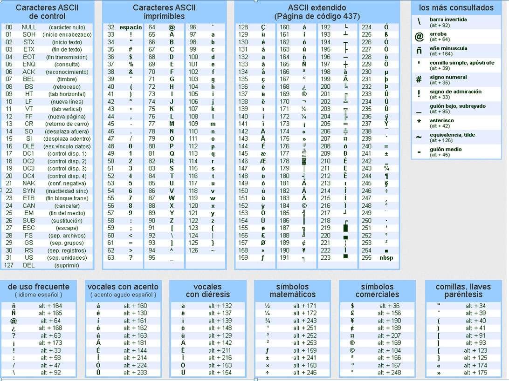

Productividad Visual
- Live Server: Actualización automática del navegador al guardar.
- Color Highlight: Visualización de colores directamente en el código CSS.
- CSS Peek: Acceso rápido a los estilos desde el archivo HTML usando
Ctrl + Clic.
4TO A Tarde - Informática
Prof. J. Pantaleo
El concepto de sistema se refiere a un conjunto de elementos que están relacionados entre sí y trabajan juntos para cumplir una función o alcanzar un objetivo.
Un sistema digital es un conjunto de dispositivos electrónicos que procesan, almacenan o transmiten información usando señales digitales representadas por 0 y 1.
Un sistema analógico representa y procesa información mediante señales continuas.
Un bit (binary digit) es la unidad más pequeña de información en informática.
El sistema binario utiliza solo dos números: 0 y 1.
Dividir entre 2 y tomar los restos.

Sumar potencias de 2 según cada bit.

Para convertir números entre sistemas numéricos también se puede usar una calculadora en modo programador o herramientas online.
Calculadora online: Convertidor Decimal a Binario

Convierte los números binarios a decimal, busca en la tabla y arma la frase:
01000101 01010011 00100000 01010101 01001110 00100000 01001010
01010101 01000101 01000111 01001111 00100000 01000100 01000101
00100000 01001100 01000001 01000000 01010000 01010010 01001111
01000111 01010010 01000001 01001101 01000001 01000011 01001001
01001111 01001110 00100000 01001100 01000001 00100000 01010100
01000101 01000011 01001110 01001111 01001100 01001111 01000111
01001001 01000001 00100000 01000101 01010011 00100000 01000110
01010101 01010100 01010101 01010010 01001111
El hardware se refiere a todas las partes físicas de una computadora... componentes tangibles que puedes ver y tocar.
Función: Ejecuta instrucciones y controla el PC.
Une todos los componentes y permite la comunicación entre ellos.
Almacena temporalmente datos para uso rápido de la CPU.
Procesa gráficos y video. Vital para juegos y diseño.
Simulador de Ensamble PC| Componente | Función |
|---|---|
| CPU | .................................... |
| RAM | .................................... |
| SSD | .................................... |
El software es el conjunto de instrucciones, datos y programas que permiten que el hardware realice tareas específicas. Si el hardware es el cuerpo, el software es la mente.
Es el software base. Gestiona los recursos del hardware y permite la interacción con el usuario.
Programas diseñados para realizar tareas específicas para el usuario final.
Son las herramientas que usan los desarrolladores para crear otros programas. Incluyen editores de texto, compiladores e intérpretes.
| Tipo | Características | Ejemplos |
|---|---|---|
| Software Libre | Se puede ver el código, modificarlo y compartirlo libremente. | Linux, VLC, LibreOffice. |
| Software Propietario | El código es cerrado y pertenece a una empresa; suele requerir pago. | Windows, Photoshop, iOS. |
Es un tipo de software específico que está grabado directamente en los circuitos integrados (hardware). Su función es controlar el funcionamiento del dispositivo a nivel físico. Ejemplo: La BIOS de una computadora.
Software de Programación: Visual Studio Code
Entra en la web oficial: code.visualstudio.com.
Haz clic en el botón azul "Download for Windows". Se descargará el instalador (ej. VSCodeUserSetup-x64.exe).
Inicia el instalador. Durante el proceso, presta atención a la Selección de tareas adicionales. Es fundamental marcar todas las casillas:
Finalmente, haz clic en Instalar y luego en Finalizar.
Ajustes esenciales para trabajar con diseño web de forma eficiente.
Para no perder cambios ni olvidar guardar manualmente:
Ctrl + Clic.Shift + Alt + F).Consejo: Mantén instaladas solo las que uses para que VS Code siga siendo rápido.
Ctrl + Shift + X): "Spanish Language Pack".Ctrl + K + T para elegir un tema visual.Domina el teclado para programar con la velocidad de un profesional.
! + Enter.Nombre de etiqueta + Tab.lorem + Enter.| Acción | Teclas | Efecto |
|---|---|---|
| Multicursor | Alt + Clic |
Escribe en varios lugares a la vez. |
| Selección Múltiple | Ctrl + D |
Selecciona la palabra actual y la siguiente igual. |
| Clonación | Shift + Alt + ↓ |
Duplica la línea hacia abajo. |
| Teletransporte | Alt + ↑ / ↓ |
Mueve una línea entera de lugar. |
Shift + Alt + F.Alt + Z (Para que el código no se desborde).Ctrl + /.Ctrl + K → Z (Pantalla limpia).Ctrl + "+" / "-" (Aumentar/Reducir) y Ctrl + 0 (Reset).